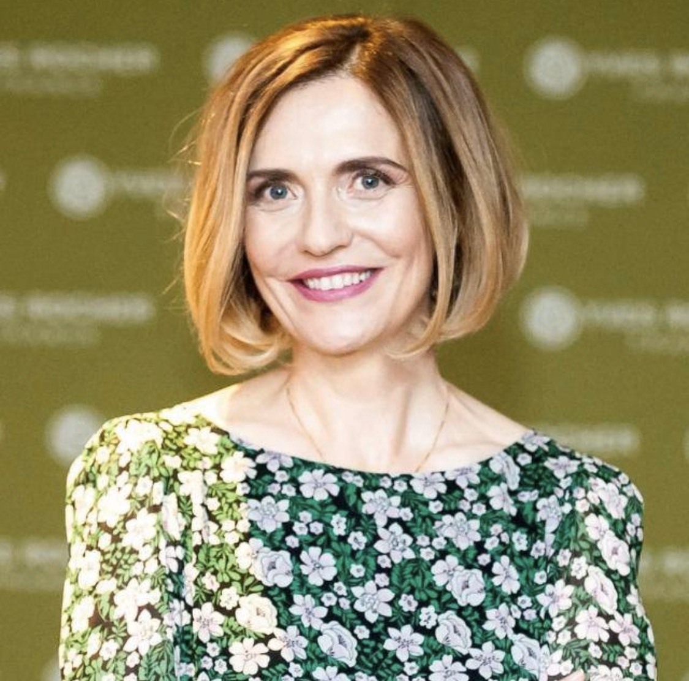
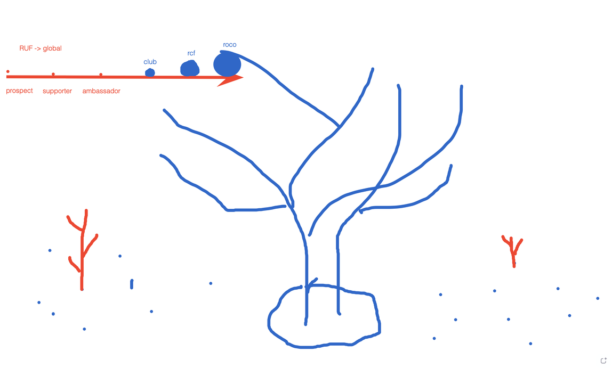

Contact: ruf.beatriceradu@gmail.com, +40 (740) 850 850
Documents:
Connected to:
Position: Strategy Director for Eastern Europe at Yves Rocher
More than 25 years of experience, most of it spent in sales strategy. Beatrice worked in two large multi-nationals, Avon Cosmetics and Yves Rocher. Beatrice worked in many countries, Czech Republic, Egypt, Slovakia.

Links:
Beatrice Radu, Georgi Merdariu, Mihai Lehene
3 Personal Painpoints/Issues you dealt with
Top 3 personal wishes
Primary Objectives 2026
Deliverables
GlobalRomania integration
Vorbesti de oportunitatea de a deveni angel, voluntar, etc
Asadar: 1) linkul unde pot alege data de calendar
2) zoom minutes de la mine
3) invitatie pt experti - prezentare initiala cu public + un focus group (doar experti)
4) invitație roundtable/group discussion cu 20 de practitioners + experts
5) the guidebook of GlobalRomania
6) flier-ul GlobalRomania versiunea #1
7) invitatia pentru VIP Doctors: 1) un email cu invitatie la 30’ zoom call 2) un brief pe care il putem trimite inainte 3) o invitatie oficiala pe care le-o trimitem dupa ce accepta
Pls work & consult with Simona on one side/Andreea on the other
Also, if it’s a good fit for you, I think you should consider joining the RUF core team as strategic comunicator. That’s 1 extra hour of time/week. Of course, I need you to think and confirm, then I need to talk to Georgi, Madi, & Dragos
Participants:
Beatrice: I’m here for you, whenever you need me
Behind all the messages, I hear this “need to grow”
Piloting the application: I saw the idea, and I thought “wow”
How do we grow, using this application? This is what I did all my life, I developed communities.
RE: Circle:
How I see this:
What’s in it for me?
Projects
Beatrice: How can I help?
Daughter, Alexandra
Communication & media
Acceptata la Boston College
Provocare: casa din Amsterdam
Alexandra Radu:
Document:
Ca sa cresti exponential: referral program
Recommendation:
Pachetul de comunicare trebuie sa fie foarte bine pus la punct
Example, you can focus:
Actiuni standard:
O campanie care promoveaza ideea de a deveni ambasador:
Another idea:
Statement: Manifesto al RUF
Insta, Facebook, Linkedin
Ambasadele:

See also:
Coming from the outside:
RUF a devenit cunoscut (in Romania) mai ales datorita COVID
RUF/FORA/ROCO
Se cere un upgrade
Strategia de comunicare:
Strategia de comunicare:
Comunicarea se construieste pe niste mesaje cheie:
Modelul actual se aseamana foarte mult cu fundatiile comunitare din Romania:
What I remember:
Per ansamblu:
As a strategist:
The website should reflect the strategy
It is confusing:
Looking forward to a meeting related to a topic that is very dear to me: Telemedicine
Potential Founding Angel
Doua directii:
I remembered what we discussed 4 years ago:
You need a balance.
I see RUF Romania as a counterparty
See
Pot sa iti confirm ca RUF are brand awareness in Romania: Romanul este facut din emotie. Faptul ca RUF s-a facut vizibil during COVID contributed a lot.
I have a very interesting project - it's a large project. I am helping them with strategy (what I know).
They are targeting the USA and the Middle East.
Who: some guys from Buzau that are very passionate about Romanianism (Brancusi, Regina Maria). They own "Dacia Dining" restaurant. They own a resort at Pietroasele (Closca cu Puii de Aur area).
The umbrella project is related to the Romanian culture, traditions. It assumes the European certification of some Romanian products (Babik de Buzau + wine collection).
I asked them: are you “open” to the idea of donating a small percentage of the sales to a non-profit organization? I told them about you. Salamul de Sibiu, Recas - they cannot afford to make this kind of concession. They have this kind of opening.
Vreau o chestie de impact. Daca eu spun 10%, atata va fi. Este de anvergura. Antreprenori romani.
Si pe lista de beneficii (pentru angajati) - there is agressive action on the market - banks do the same things. If you go to Banca Transilvanica, you get 5% discount.
Some of the things below have been clarified, we're mostly concerned about the
Buna Mihai,
Am pregatit cate ceva pentru call ul nostru.
Intelegerea mea initiala a fost ca tu iti doresti o prezentare a RUF ului cu scopul atragerii de fonduri,precum si un project plan de implementare.
Apoi mi ai vorbit de federatie - aici as vrea sa inteleg ce iti doresti
Astfel, iti prezint pe scurt ce am facut.
A. Mi-am propus sa inteleg conceptul de fond.
Impartasesc cu tine 2 link uri al caror continut mi au atras atentia :
https://fundatiacomunitarabucuresti.ro/category/program/
https://fundatiicomunitare.ro/ -vezi atasament cu o informatie de luat in conisderare
RUF ul pare un fond mixt. Sunt 2 posibilitati: stabilim noi tematica/tematicile si le propunem donatorilor sau vorbim cu donatorii ce isi doresc ei sa finanteze.Asta i foarte important de stabilit in realizarea proiectului, pentru ca impacteaza modalitatea de construire a fondului.
B. Etapele pe care eu le vad in constructia unui fond avand drept finantatori donatori din diaspora ar fi:
1. Stabilirea ariei sau ariilor in care acest fond doreste sa produca schimbare: educatie, sanatate, mediu, social, cultural etc
2. Intocmirea listei de 100 de potentiali donatori cu care vor fi stabilite intalniri individuale
3. Crearea case for support-ului – top 7-10 motive de ce un donator ar investi/ dona in acest fond
4. Identificarea organizatiilor partenere si organizatiilor beneficiare care vor implementa. Fundatiile comunitare pot fi partener in administrarea fondului in sensul realizarii managemntului de fond insemnand: consultanta in crearea fondului, organizarea concursului de proiecte in aria vizata, urmarirea implementarii proiectelor si raportarea catre partenerul/ donatorul corporate.
Exista mai multe variante de actiune:
- Daca numarul donatorilor este relativ mic si valoarea donatiilor lor mare ei vor fi consultati legat de tematica fondului
- Daca numarul de donatori vizat este foarte mare si valoare donatiei mica/ foarte mica initiatorul fondului alege tematica si o propune ulterior potentialilor donatori
La business plan pornim de la o estimare a numarului de donatori si o medie valoare donatie/donator
5. Realizarea intalnirilor cu potentialii donatori si generarea fondurilor propuse/vizate – campanie de fundraising
6. Implemengtarea programului multi-anual ( 2-3 ani) sustinut prin fond: concurs proiecte, selectie proiecte, implementare proiecte, raportare si evaluare, masurare impact.
C. Mi-am propus sa inteleg ce ar trebui sa contina o prezentare de atragere de fonduri
Am o varianta soft- vezi atasament email; cred ca lipseste valoarea totala fond pe care o vizam intr o anumita perioada de timp; un summary la un business plan ar fi util, dar cred ca nu l putem contrui deocamdata, without clarity on some critical elements of the project J
D. Cases for support
Am trimis 2 exemple de cases for support,ca si exemple doar.
Asta trebuie sa o construim impreuna si zic ca documentul Case study Irlanda este inspirational
Ma mai gandesc pana ne auzim.Am déjà un motiv pe teava – promovare si asistare voluntari din diaspora cu scopul sprijinirii populatiei din Romania in diverse situatii.
Strategist, ran businesses over 100M euros
Comfort zone: the corporate world. I have some interesting personal projects, but I want to make this step, get out of my comfort zone, I really like your initiative and I think it has a lot of potential.
The concept of “community” is an upgrade to the concept of a “network” - it fascinates me.
When she was GM in Czech Republic, Poland, Egypt, she learned about their diaspora.
She also has fundraising experience. At Avon, collected 1M euros for breast cancer (as part of Avon - very successful model in the Czech Republic)
If you need anything, any kind of feedback, just call me
I was working directly with my superior in New York, travelled to NY about once a month for years. I was one of 15 global strategists at Avon, so I made a lot of connections.
People in other countries (Czech Republic, USA) resonate with suffering, people better than Romanians - I have experience in the Czech Republic and Romania, I could see the involvement of people around me, and how much they care.
Member of the European E-Commerce Council. Digital Transformation - Cambridge: all global big players in the market are people from the ygeneration, that didn't follow the classic business plan. As an alumni of this program we have a commitment to help each other.
I will send you the materials I got from Cambridge. I would like you to see what the latest trends in the industry are